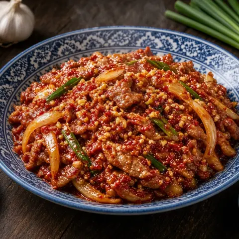

🔥 Spicy Pork Stir-Fry (Jeyuk Bokkeum)
Thinly sliced pork in a sweet and fiery gochujang marinade, seared until caramelized. Great wrapped in lettuce.
Ingredients
- Pork1,000 g
- Onion1
- Spring onion3 stalks
- Cooking oil2 tbsp
- Gochujang135 g
- Korean chili flakes1 tbsp
- Soy sauce60 ml
- Vinegar2 tbsp
- Sugar2 tbsp
- Honey1 tbsp
- Sesame oil2 tbsp
- Garlic5 cloves
- Ginger25 g
- Lettuce1 bunch
Steps
- Put the pork shoulder in the freezer for about 1 hour so it firms up, then slice it 3 mm thick against the grain.
- Combine the pork with the sliced onion and scallions cut into 5 cm lengths.
- Stir together the gochujang, chili flakes, soy sauce, vinegar, sugar, honey, sesame oil, garlic and grated ginger until the sugar dissolves. Work it into the pork with your hands and marinate in the fridge for at least 1 hour.
- Heat 2 tablespoons oil in a large pan over high heat and stir-fry the pork in batches for 3–4 minutes each, until browned, caramelized and cooked through.
- Serve topped with sliced scallion, with lettuce for wrapping and steamed rice.
Cook it step by step in Yumwell
Timers for every step, a shopping list and a weekly menu. Free on Google Play.